Registro de criaturas da Ordem
Sangue
| Dama de Sangue | |
|---|---|
| 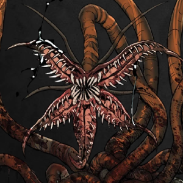 | Surge a partir de hospedeiro que foi sacrificado em um ritual e que continha sementes de orquídeas de sangue alojadas em sua coluna, assim que o ritual é realizado, o corpo se reparte ao meio com a eclosão das sementes que então consomem sua carne e se transformam na criatura. |
| Zumbi de Sangue | |
|---|---|
A representação mais comum do Sangue em nossa realidade. |
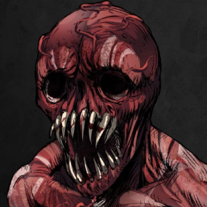 |
Morte
| Amálgama Decadente | |
|---|---|
 |
É invocada através de um ritual com o uso de um objeto amaldiçoado, um hospedeiro vivo E corpos que foram transformados em Esqueletos de LodO, que se fundem em uma grotesca pilha de ossos e lodo preto formando essa criatura. |
| Enraizado | |
|---|---|
| Se manifestam através de cadáveres que foram enterrados próximos à vegetação infestada pela Morte, os corpos então são tomados por raízes e lodo que os transformam nessa criatura. | 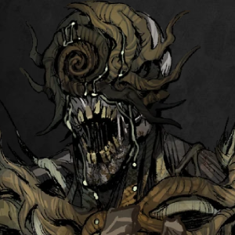 |
| Esqueleto de Lodo | |
|---|---|
| 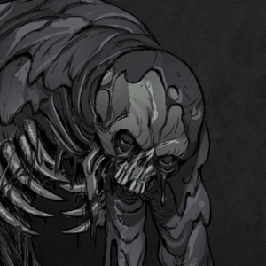 | A manifestação mais básica da Morte em nossa realidade. Surgem através de cadáveres que foram completamente consumidos pela Morte, sendo tranformados em um esqueleto movido pelo lodo que está constantemente escorrendo por todos os seus orifícios. |
| Xilosapien | |
|---|---|
| Surge do Enraizado de uma pessoa que morreu após um grande sofrimento e que possui desejos de vingança ou memórias de arrependimento tomando sua mente. Após esse Enraizado se fortalecer com o Medo, o Conhecimento tenta modificar sua aparência para torná-la mais humanoide, transformando-a assim, na Xilosapien. | 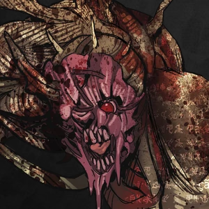 |
Conhecimento
| Bicho-Papão | |
|---|---|
| 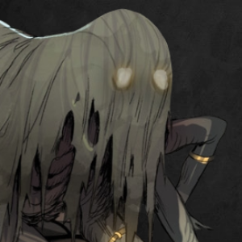 | Se originou através do medo de incontáveis crianças que ouviram seus pais contando lendas sobre essa criatura, atualmente ela espreita em telhados de casas com crianças pequenas, se rastejando até elas por meio de dutos de ventilação, chaminés ou até mesmo janelas deixadas abertas, se aloca em qualquer espaço vago no ambiente e então destrói a sanidade de suas jovens vítimas. |
| Existido | |
|---|---|
Uma pessoa se torna um existido assim que entende o Outro Lado por completo, se tornando uma casca vazia que tenta a todo custo ser lembrado, repetindo seu nome incansávelmente e tentando fazer com que olhem para ele. Após a transformação, o corpo é tomado por tatuagens com frases que historicamente causaram medo. |
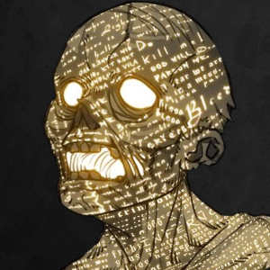 |
| Vulto | |
|---|---|
| 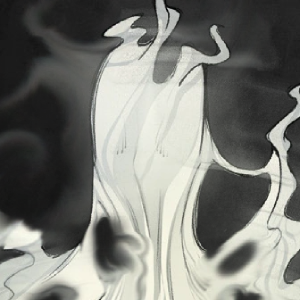 | Se forma em áreas com neblina paranormal através da paranoia de um observador que teme a existência de algo na névoa, ironicamente, esse delírio é o responsável pela formação dos Vultos, que se manifestam em uma forma humanoide formada por névoa sólida. |
Energia
| Anárquico | |
|---|---|
| 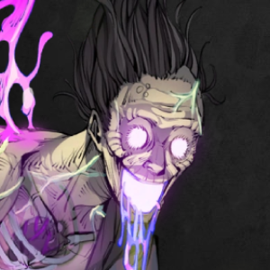 | Um Anárquico surge a partir de uma morte causada por um evento inoportuno e azarado, todo o caos que envolveu aquela tragédia faz com que a Energia rapidamente tome conta do corpo da vítima,o transformando nessa criatura errática e imprevisível. |
| Ciborgue | |
|---|---|
| Um Ciborgue é criado através de um corpo que foi modificado com membros mecânicos ativados apartir de Energia Paranormal, toda a dor causada no processo de instalação desses membros somada a intensa Energia acabam transformando o hospedeiro nessa grotesca criatura que é um aglomerado de partes robóticas e orgânicas. | 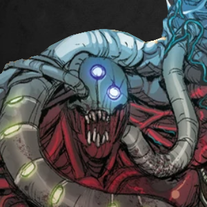 |
| Perturbado | |
|---|---|
| 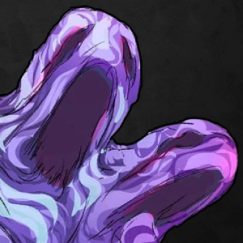 | Um perturbado surge de uma alma que foi enlouquecida de forma tão brusca e agressiva que perdeu a percepção da realidade antes mesmo de perceber que não estava mais viva, transformando-se assim nessa forma plasmática e caótica, mergulhada em profundo desespero e confusão. |
| Traumático | |
|---|---|
| Um traumático surge após um grande desastre que causa várias mortes estatisticamente improváveis, a Energia absorve os corpos das vítimas e os mescla em uma amálgama de pavor, sofrimento e agonia, cuja única função é continuar sua existência caótica através de um ciclo de acidentes. | 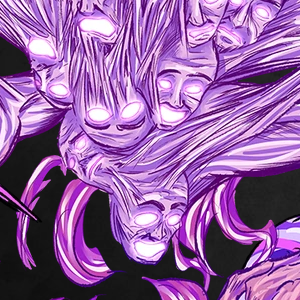 |
Ameaças não paranormais
| Dissociado | |
|---|---|
| 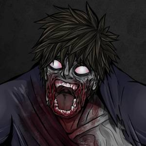 | Nada mais é do que uma pessoa que teve sua mente completamente danificada pelo paranormal, ficando no limiar entre o Outro Lado e a Realidade. Por não terem passado por uma transformação completa, não podem ser categorizados como criaturas, também não sendo fortes como elas, mas não deixando de ser um perigo para civis e agentes novatos. |